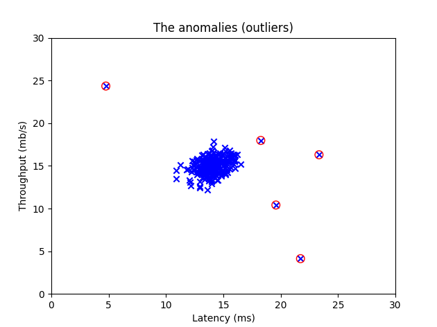

Problem Definition
Manually identifying anomalous entries in a large 2-dimensional dataset is challenging. An automated solution is required.
Solution
If a dataset follows a normal distribution, anomalies can be detected using the Probability Density Function (PDF) combined with thresholding to automatically label outliers.
Considered Algorithms
- Z-score
- Interquartile Range (IQR)
- K-Nearest Neighbors (KNN)
- Isolation Forest
- Autoencoders (Neural Networks)
- Probability Density Function (PDF)
Selected Method: PDF with Thresholding
- Best suited for small datasets (300 points).
- Works well with continuous, non-categorical features.
- Handles normally distributed data efficiently.
- Simple and interpretable approach.
implementation
- Define the Probability Density Function (PDF).
- Optimize the threshold for anomaly detection.
- Implement the solution and visualize the results.
- Summarize the implementation process.
Results
- Visual representation of detected anomalies.

- The model effectively identifies anomalous entries.
- Numerical performance metrics.
Limitations
- Optimizing the threshold using the F1-score required some labeled anomaly data.
- Workarounds include statistical thresholding, quartile-based cutoffs, or KNN-based approaches.
Codebase for the program